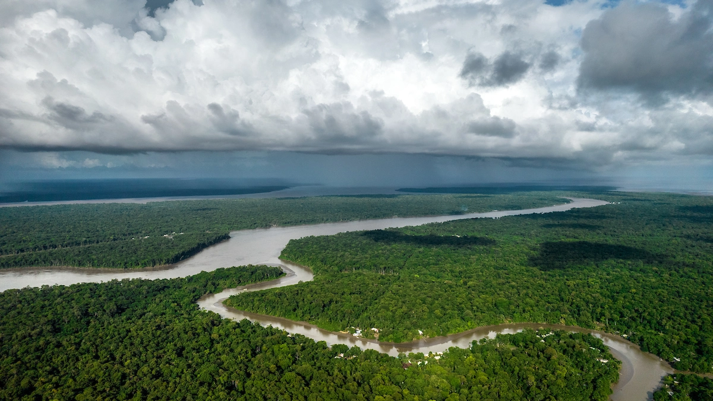
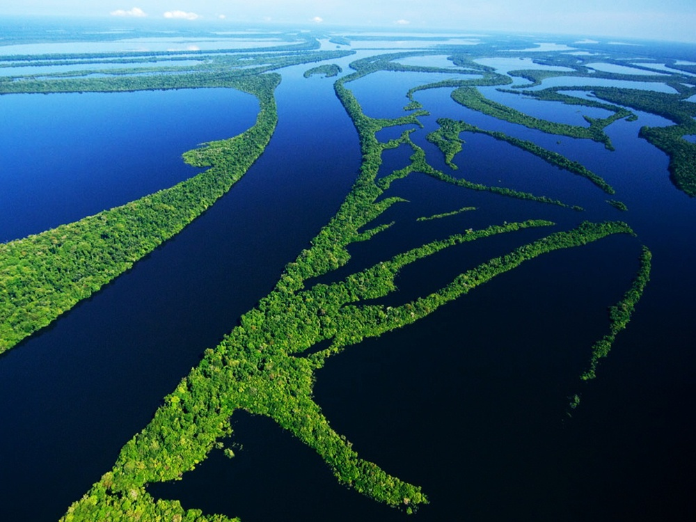

Amazônia
1. Biodiversidade
A Amazônia abriga a maior biodiversidade do planeta, com milhões de espécies de plantas, animais e microrganismos, muitas das quais são endêmicas.
2. Vegetação
A floresta amazônica é densa e úmida, composta por árvores de grande porte, como a castanheira e a seringueira, além de uma grande diversidade de epífitas e cipós.
3. Solo
O solo amazônico, apesar de ser geralmente pobre em nutrientes, é sustentado pelo ciclo de reserva da matéria orgânica, que mantém a fertilidade da floresta.
4. Ameaças
A Amazônia enfrenta ameaças como desmatamento, queimadas, mineração e expansão agropecuária, o que coloca em risco sua biodiversidade e os povos indígenas que dependem dela.



Riqueza Animal da Amazônia
- Mamíferos: Espécies como a onça-pintada, o boto-cor-de-rosa e o macaco-aranha.
- Aves: Mais de 1.300 espécies, incluindo o galo-da-serra, a harpia e o tucano-toco.
- Répteis e Anfíbios: Diversas serpentes, como a sucuri e a cobra-papagaio, além de jacarés, tartarugas e uma grande variedade de sapos e rãs.
- Invertebrados: Inúmeros insetos, como borboletas e besouros, além de aranhas e formigas, fundamentais para a polinização, proteção e equilíbrio ecológico.